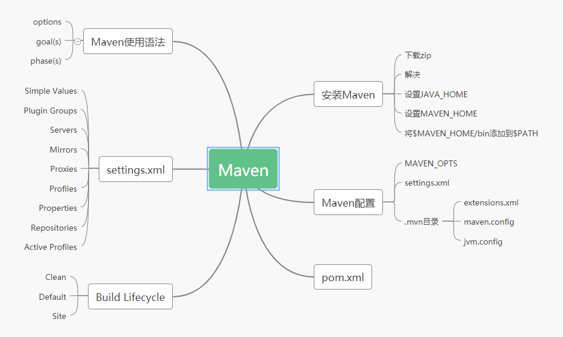
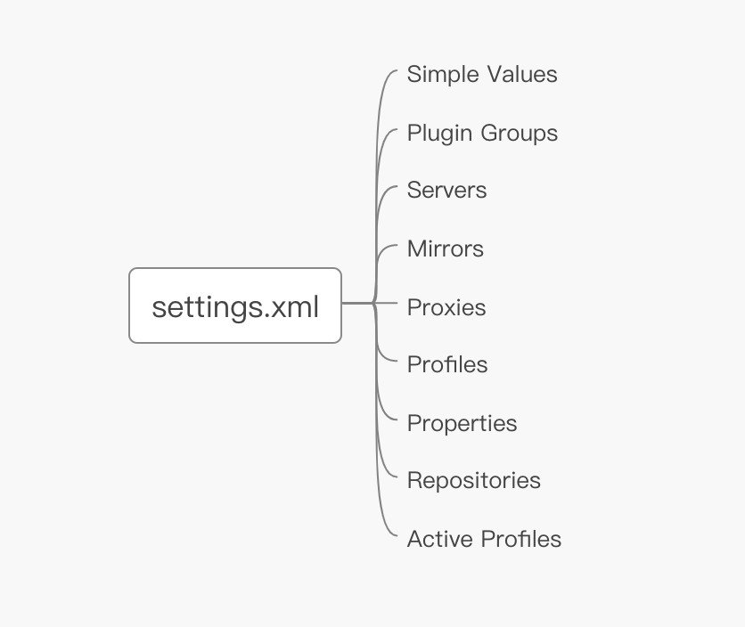
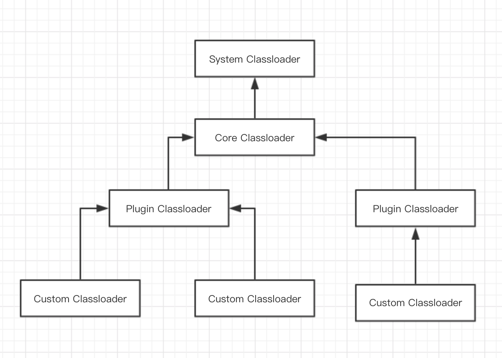
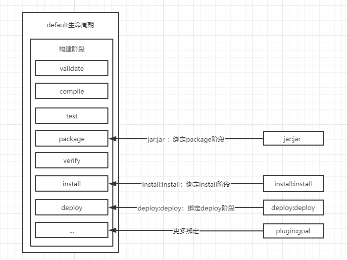

Maven强大的Java工程构建工具，做Java开发时少了跟Maven打交道，之前在知乎上看到有人提问：“学Java开发需不需要学习Maven？”，个人认为是必需要学的，这和工欲善其事必先利其器是一个道理，开发软件也要先把工具学好才能事半功倍啊。所以最近花了一点时间，将Maven的基础知识整理成一张脑图：

这篇文件主要简单介绍一些Maven中的概念，文章大致内容如下：
其他的一些高级特性如依赖、插件、settings部分留待之后再整理成。
安装Maven的步骤非常简单、快速，安装之前先确认JAVA_HOME环境变量是否指向JDK主目录可以使用echo命令输出JAVA_HOME目录：
echo $JAVA_HOME如果输出为空说明JAVA_HOME未设置或指向不正确，可以使用export导出JAVA_HOME变量：
export JAVA_HOME=/path/to/java_home/要使
JAVA_HOME变量开机生效，可以将JAVA_HOME=/path/to/java_home/放入.profile或.bash_profile视机器环境而定。
设置好JAVA_HOME环境变量后，就可以安装Maven了：
unzip命令解压apache-maven-3.6.3-bin.zip压缩文件MAVEN_HOME环境变量，指向解压后的apache-maven-3.6.3-bin目录MAVEN_HOME/bin添加PATH环境变量中下载 Maven
wget http://mirrors.tuna.tsinghua.edu.cn/apache/maven/maven-3/3.6.3/binaries/apache-maven-3.6.3-bin.zip解压 Maven
unzip apache-maven-3.6.3-bin.zip设置
MAVEN_HOME环境变量
cd apache-maven-3.6.3
pwd #查看当前目录
export MAVEN_HOME=/Users/yjwfn/bin/apache-maven-3.6.3设置
PATH环境变量
export PATH=$PATH:$MAVEN_HOME/bin以上配置只是当前shell终端生效，要每次开机自动设置需要将以上命令放入~/.bash_profile或~/.profile中，本文使用~/.bash_profile（不同的机器名称会不一样，Linux一般叫~/.profile）：
vi ~/.bash_profile将以下命令复制到文件中：
export MAVEN_HOME=/Users/yjwfn/bin/apache-maven-3.6.3
export PATH=$PATH:$MAVEN_HOME/bin使用which mvn命令验证安装是否正确，查看输出mvn位置是否正确：
liuweideMacBook-Pro:bin yjwfn$ which mvn
/Users/yjwfn/bin/apache-maven-3.6.3/bin/mvn使用mvn -v查看安装的 Maven 版本是否正确（因为有些系统会自带 Maven）：
liuweideMacBook-Pro:bin yjwfn$ mvn -v
Apache Maven 3.6.3 (cecedd343002696d0abb50b32b541b8a6ba2883f)
Maven home: /Users/yjwfn/bin/apache-maven-3.6.3
Java version: 1.8.0_191, vendor: Oracle Corporation, runtime: /Library/Java/JavaVirtualMachines/jdk1.8.0_191.jdk/Contents/Home/jre
Default locale: zh_CN, platform encoding: UTF-8
OS name: "mac os x", version: "10.14.6", arch: "x86_64", family: "mac"运行 Maven 命令的基本样式由options、goal(s)、phase(s)组成：
mvn [options] [<goal(s)>] [<phase(s)>]所有的options可以使用mvn -h查看：
liuweideMacBook-Pro:bin yjwfn$ mvn -h
usage: mvn [options] [<goal(s)>] [<phase(s)>]
Options:
-am,--also-make If project list is specified, also
....Maven 命令的重点是goal(s)、phase(s)这两个概念，字面意思注是目标、阶段的意思。他们的使用和另外一个概念life cycles有关，后面会详细解释。现在只需要明白一条Maven命令由多个options、goal(s)、phase(s)组成。
Maven 有三个可以修改配置的地方：
MAVEN_OPTS 环境变量：向全局Maven提供额外的选项，如JVM配置参数-Xms256m -Xmx512m；settings.xml：文件位于USER_HOME/.m2目录中，向多个Maven项目提供统一的配置.mvn目录：该目录位工程目录根目录中，是个隐藏的文件
MAVEN_OPTS是一个环境变量，默认是空的。为测试将MAVEN_OPTS设置成-h：
export MAVEN_OPTS=-h #加个-h选项然后执行mvn不带任务参数就打印出usage：
用法: java [-options] class [args...]
(执行类)
或 java [-options] -jar jarfile [args...]
(执行 jar 文件)注意： 仔细一看这个usage其实是Java命令输出的java -h：
iuweideMacBook-Pro:bin yjwfn$ java -h
用法: java [-options] class [args...]
(执行类)
或 java [-options] -jar jarfile [args...]
(执行 jar 文件)测试java -h与将MAVEN_OPTS设置成-h然后执行mvn打印出来的效果一致，所以MAVEN_OPTS大家应该知道怎么用了吧！要往JVM传递参数可以通过MAVEN_OPTS变量设置。
settings.xml 可以放在两个地址：
$MAVEN_HOME/conf/settings.xmlUSER_HOME/.m2中$MAVEN_HOME就是安装步骤中设置的环境变量，settings.xml的加载可以打开--debug选项查看：
mvn --debug
# 部分控制台输出
[DEBUG] Reading global settings from /Users/yjwfn/bin/apache-maven-3.6.3/conf/settings.xml
[DEBUG] Reading user settings from /Users/yjwfn/.m2/settings.xml如控制台输出一样，会在$MAVEN_HOME和USER_HOME/.m2中加载两个settings.xml文件。settings.xml的配置项非常多，就不详细说明了可以查看官方文档。

.mvn目录.mvn目录位于工程根目录中，是工程级的配置一般包含三个配置文件：
extensions.xml是为了使开发者更方便的使用Extensions功能建立的配置文件，Extensions是一种添加库到Core Classloader的方式，Maven主要有四类System Classloader -> Core Classloader -> Plugin Classloaders -> Custom Classloaders由于CloassLoader都是双亲委派模式，所以添加到Core Classloader中的库可以在Plugin Classloaders和Custom Classloaders中使用：

extensions.xml这个配置文件就是声明哪些库需要添加到Core Classloader中，如下声明将guava添加到Core Classloader中：
<extensions xmlns="http://maven.apache.org/EXTENSIONS/1.0.0" xmlns:xsi="http://www.w3.org/2001/XMLSchema-instance"
xsi:schemaLocation="http://maven.apache.org/EXTENSIONS/1.0.0 http://maven.apache.org/xsd/core-extensions-1.0.0.xsd">
<extension>
<groupId>com.google.guava</groupId>
<artifactId>guava</artifactId>
<version>23.0</version>
</extension>
</extensions>maven.config主要用于添加通用选项，在执行mvn命令时会将maven.config中配置的命令options添加到命令中。
新建个maven.config文件，内容如下：
-v直接执行mvn不带任何选项，由于在maven.config中有-v选项，所以打出的内容就是mvn -v：
liuweideMacBook-Pro:.mvn yjwfn$ mvn
Apache Maven 3.6.3 (cecedd343002696d0abb50b32b541b8a6ba2883f)
Maven home: /Users/yjwfn/bin/apache-maven-3.6.3
Java version: 1.8.0_191, vendor: Oracle Corporation, runtime: /Library/Java/JavaVirtualMachines/jdk1.8.0_191.jdk/Contents/Home/jre
Default locale: zh_CN, platform encoding: UTF-8
OS name: "mac os x", version: "10.14.6", arch: "x86_64", family: "mac"
liuweideMacBook-Pro:.mvn yjwfn$jvm.config是配置JVM参数的文件，很容易理解就不多说了。
构建生命周期就Maven较核心的概念， Maven有三个内置的构建生命周期分别为：clean、default、site。
在Maven中一个生命周期由一系列Build Phase组成，而每个生命周期都会有很多Build Phase如default生命周期由以下Build Phase组成：
这些生命周期阶段（加上此处未显示的其他生命周期阶段）将顺序执行以完成default生命周期。给定上面的生命周期阶段，这意味着当使用default生命周期时，Maven将首先验证项目，然后尝试编译源代码，针对测试运行源代码，打包二进制文件（例如jar），针对该源运行集成测试软件包，验证集成测试，将经过验证的软件包安装到本地存储库，然后将已安装的软件包部署到远程存储库。
Build Phase只是定义一些软件构建的流程，它不会直接去构建工程，这些构建流程的实施都是由插件来做的，构建生命周期可以这样理解一个生命周期由多个构建阶段组成，每个构建阶段都会被多个插件目标绑定，用一张图表示他们之间的关系：

图中的jar:jar、install:install是plugin:goal的意思，冒号的前面部分是插件名称，后面是目标名称。由上图可知当执行mvn install的命令时，会执行default生命周期中的install阶段（同时在install之前的阶段也会执行），由于install:install目标绑定到了install phase，所以install:install目标也会执行，这样就通过install插件来完成打包功能。
Maven是非常流行的构建工具，下一代构建工具Gradle也有一些点是借鉴了Maven。文中所提到的点只是Maven工具的一部分知识，Maven还有很多强大的功能如：依赖管理、插件管理、多工程等功能，后续再整理这些高级功能与大家分享。
公众号《架构文摘》每天一篇架构领域重磅好文，涉及一线互联网公司应用架构（高可用、高性能、高稳定）、大数据、机器学习、Java架构等各个热门领域。